A is for Athena G_is_for_Glue
Amazon Athena
Service to analyze data in S3 using SQL (prestoDB) 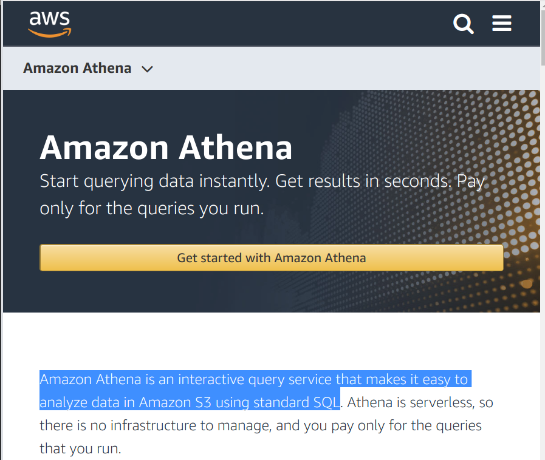
Glue Data Catalog
Hive Compatible Metadata store from AWS Glue 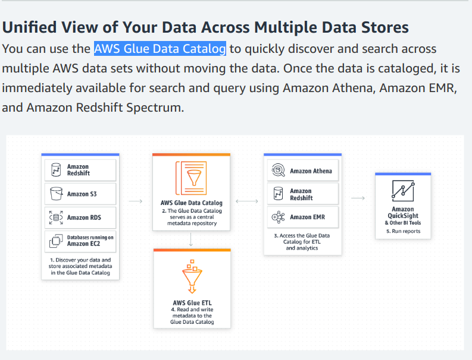
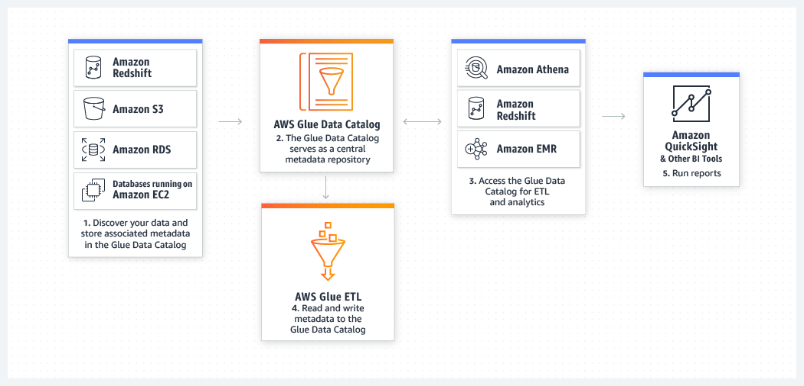
Data
core- cloudflare, cloudtrail, and elb logs
- prod logs by tag, date, hour
prod_alerts/prod_starterview- mirrors of alerts and starterview for data enrichment
prod_inventory,stg_inventory,dev_inventory- table for each s3 bucket showing s3 meta data (s3 inventory).
Data: Unified logs
core.prod_unified_logs- 3 days worth of all events, partitioned by
tag,log_date,hour raw_unified- database per tag, raw json logs partitioned by
log_date struct_unified- manually created tables, map json to fields
prod_event- converted from json to read-optimized parquet
- s3://prod-ziprecruiter-datalake-data
prod_unified_raw_v1- raw event logs, requires interpreting json
- 492 tables! who maintains?
Query Athena
athenatool in AWS Console.- API, using
botoor similar tool.
AWS Console Athena
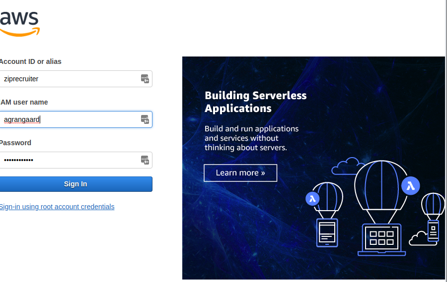
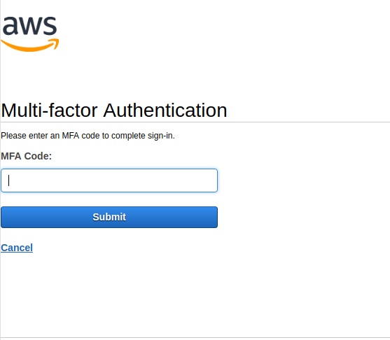
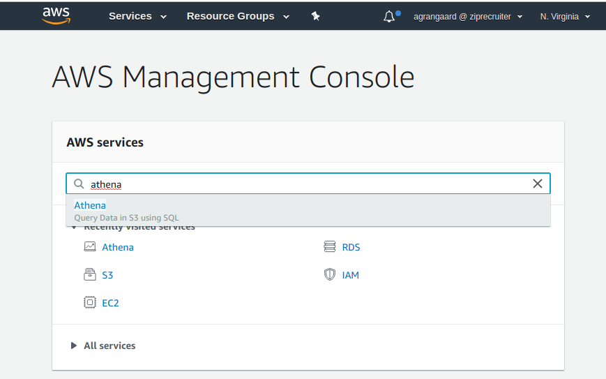
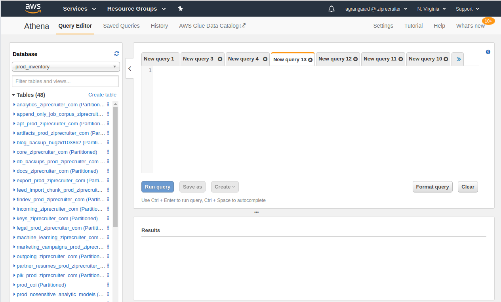
Show Databases
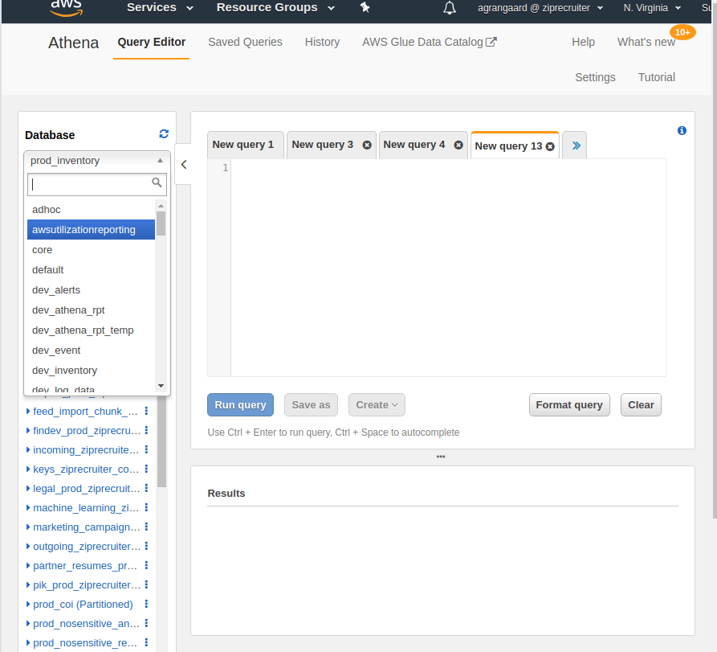
Show Tables in Database
Preview Table
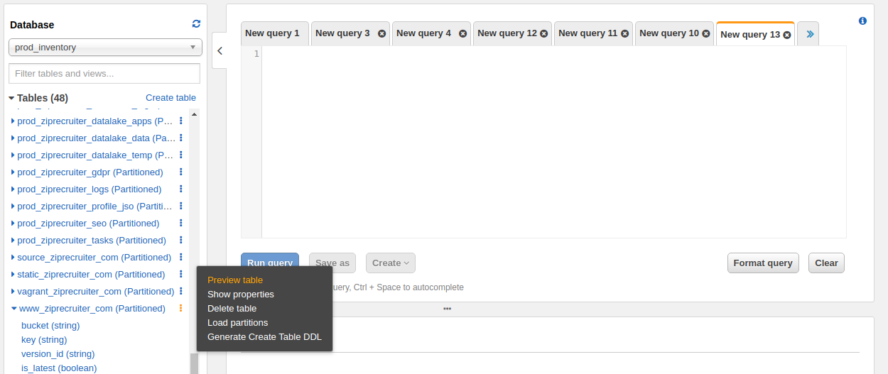
Examples
Prod Logs
SELECT tag,
count(1) AS cnt
FROM "core"."prod_unified_logs"
WHERE log_date=20181128
GROUP BY 1
ORDER BY 2 DESC limit 10
10 minute query scans 450 gb of data. ($2.50 query)
tag cnt
1 app.search-team.job-server-trace 725481457
2 app.search-team.nginx 407582049
3 seo.job.labeler 217798100
4 app.nginx.access 210645977
5 app.search-team.lager 206278310
6 perform-queued-tasks 147599866
7 python3-6.stdout 122406133
8 app.search-team.impressions 62130730
9 www.zr-proxy.access 61259979
10 hiring-company-shielding 54364283
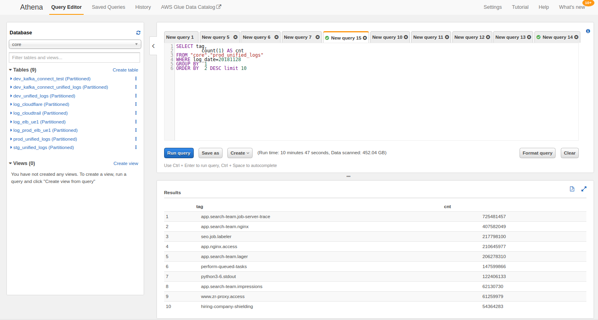
S3 Inventory
www_ziprecruiter_com
metadata over time
SELECT dt,
is_latest,
count(key) AS key,
sum(size) / (1024 * 1024) /1024 / 1024 AS total_size_tb
FROM "prod_inventory"."www_ziprecruiter_com"
WHERE (dt='2018-10-26-08-00'
OR dt='2018-11-26-08-00')
GROUP BY 1,2
ORDER BY 1 , 3 DESC ,4 DESC limit 10;
dt is_latest key total_size_tb 2018-10-26-08-00 false 3120810 725 2018-10-26-08-00 true 17664 0 2018-11-26-08-00 false 345177 70 2018-11-26-08-00 true 18638 0
www_ziprecruiter_com
How many copies of feed/zr-lastest.xml
SELECT count(key) AS cnt,
key,
dt,
sum(size) / (1024 * 1024) /1024 AS total_size_gb
FROM "prod_inventory"."www_ziprecruiter_com"
WHERE (dt='2018-10-26-08-00'
OR dt='2018-11-26-08-00')
AND key='feed/zr-latest.xml'
GROUP BY 2,3
ORDER BY 1 DESC ,4 DESC limit 10;
cnt key dt total_size_gb 323306 feed/zr-latest.xml 2018-10-26-08-00 2495 12461 feed/zr-latest.xml 2018-11-26-08-00 89
www_zipstg_com
How many copies of feed/zr-lastest.xml
SELECT count(key) AS cnt,
key,
dt,
sum(size) / (1024 * 1024) /1024 AS total_size_gb
FROM "prod_inventory"."www_zipstg_com"
WHERE (dt='2018-10-26-08-00'
OR dt='2018-11-26-08-00')
AND key='feed/zr-latest.xml'
GROUP BY 2,3
ORDER BY 1 DESC ,4 DESC limit 10;
#+END_SRC sql
#+BEGIN_SRC
cnt key dt total_size_gb
281373 feed/zr-latest.xml 2018-10-26-08-00 32
28060 feed/zr-latest.xml 2018-11-26-08-00 3
yopass bucket via aws cli
% aws s3 ls s3://yopass.ziprecruiter.com/ :)-(master)-~/src/github/makeplus/makeplus
PRE static/
2018-08-27 11:25:53 19 _redirects
2018-08-27 11:25:54 196 asset-manifest.json
2018-08-27 11:25:54 5558 favicon.ico
2018-08-27 11:25:54 21813 favicon.png
2018-08-27 11:25:54 1044 index.html
2018-08-27 11:25:54 317 manifest.json
2018-08-27 11:25:54 26 robots.txt
2018-08-27 11:25:54 3288 service-worker.js
% aws s3 ls s3://yopass.ziprecruiter.com/static/ :)-(master)-~/src/github/makeplus/makeplus
PRE css/
PRE js/
% aws s3 ls s3://yopass.ziprecruiter.com/static/css/ :)-(master)-~/src/github/makeplus/makeplus
2018-08-27 11:25:54 137510 main.6f022e07.css
2018-08-27 11:25:54 221969 main.6f022e07.css.map
% aws s3 ls s3://yopass.ziprecruiter.com/static/js/ :)-(master)-~/src/github/makeplus/makeplus
2018-08-27 11:25:54 632051 main.6371b98d.js
2018-08-27 11:25:54 3534838 main.6371b98d.js.map
yopass bucket via s3_inventory
SELECT
key
, is_latest
, is_delete_marker
, size
FROM "prod_inventory"."yopass_ziprecruiter_com"
WHERE
dt='2018-11-24-08-00'
ORDER BY key DESC
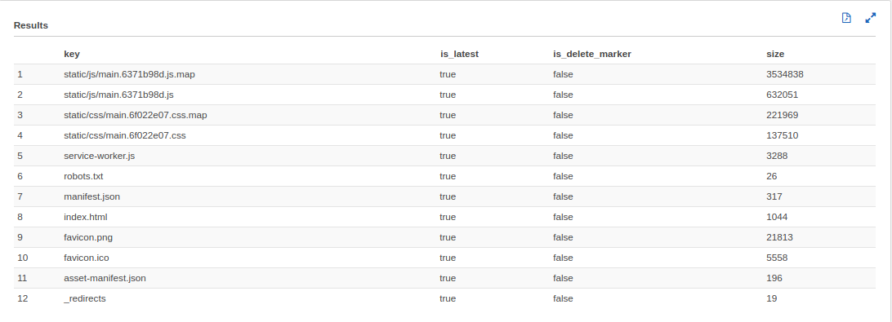
aws cmdline
all databases
aws glue get-databases | jq -c '.DatabaseList[]|.Name'
"adhoc" "core" "default" "dev_alerts" "dev_log_data" "dev_reach" "dev_reporting" "dev_spamhaus" "dev_starterview" "dev_zr_finance" "dev_zr_shared" "es" "hrxml" "logs_test" "prod" "prod_alerts" "prod_athena_rpt" "prod_event" "prod_jobs" "prod_log_data" "prod_reach" "prod_reach_test" "prod_reach_test2" "prod_reporting" "prod_reporting_test" "prod_spamhaus" "prod_starterview" "prod_static" "prod_tracking" "prod_unified_raw_v1" "prod_zr_finance" "prod_zr_shared" "raw_unified" "reach2" "redshift_archive" "sburke" "staging" "stg_athena_rpt_temp" "stg_raw_unified" "stg_unified_raw_v1" "struct_unified" "tjones" "ziprank"
core database table
aws glue get-tables --database-name=core |jq '.TableList[].Name'
"dev_kafka_connect_test" "dev_kafka_connect_unified_logs" "dev_unified_logs" "log_cloudflare" "log_cloudtrail" "log_elb_ue1" "log_prod_elb_ue1" "prod_unified_logs" "stg_unified_logs"
FIN(N)

FIN
EXTRA Images TODO